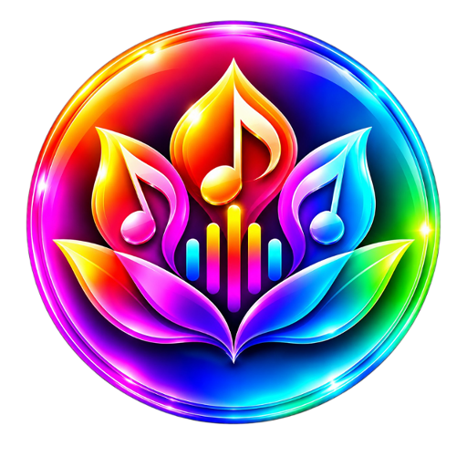

Tactile Stem Deck // FLAC 24-BIT
Tactile Modular Stems // DSD 128

120 FPS MASTER • BIT-PERFECT 384KHZ DSD512
Designed for high-resolution lossless FLAC and DSD formats. Built with cooperative 120Hz display locking, 3D Binaural Spatializer, Solfeggio 528Hz Sacred bio-mixers, and parabolic kinetic edge gestures.
Tap any signature petal below to synthesize a real-time Web Audio API harmonic chord tuned to its distinct frequency while morphing the page theme!
Interactive 2D acoustic stage positioning. Simulates human interaural time delay (ITD) and room acoustics (Studio, Concert Hall, Jazz Club, Open Air) without stereo fatigue.
Real-time global harmonic phase alignment at 432.0/440.0 ratio with circadian isochronic bio-modulation (Theta 6.0Hz, Alpha 10Hz) and gentle pink/brown noise masking.
Outgoing song fades down smoothly (1.0 → 0.0) while the incoming song starts immediately at full 100% volume with zero ducking, preventing silent track starts when scrubbing.
Interact with the live simulation below or drag inward from either edge of your screen at any time to experience the fluid kinetic deflection!
Triggers smart navigation: Jumps straight to the active playback source directory if playing from another crate/folder, or exits drilldown to the Vault Root overview.
Snaps back to the pre-jump inspected stash / crate when returning from playback source, or sequences forward to the next consecutive audio crate in memory.
Install the high-resolution direct-to-DAC lossless build. Equipped with ALSA hardware bypass, 384kHz DSD512 bit-perfect transport, cooperative 120Hz display refresh locking, and zero background telemetry.
Have a feature idea, DSP tuning request, or hardware DAC feedback? Send your thoughts directly to the developer at souljalazian@gmail.com.